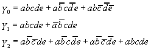

1. A program run on Computer A executes 1,000 instructions, 20%
of which are "String" instructions. The same program
executed on Computer B executes 1,200 instructions, 15% of which
are "String" instructions. The following table gives
the Clocks per Instruction (CPI) for string and non-string instructions
on each computer, along with their clock speeds:
| Computer A | Computer B
|
| CPI - String | 3 |
4 |
| CPI - Non-string | 2
| 2 |
| Clock Speed | 100 MHz
| 125 MHz |
- What will be the total number of clock pulses to run the program
on each computer? Show all work.
- How many nanoseconds is each clock pulse for each computer?
- Which computer runs the program faster, and by how much?
Show work.
2. For each of the instructions described, a) write the corresponding
MIPS assembly language, b) translate the instruction to binary,
and c) write the binary value in hexadecimal. First, here is
a table to help you:
| Op Code
| Function Code |
| add | 0
| 32 |
| beq | 4
| |
| j | 2
| |
- Add registers 7 and 12; put the sum in register 25.
- Branch backward 15 instructions if registers 21 and 14 are
equal. (Help: If I say that an instruction branches backward
one instruction, I mean that it branches to itself.)
- Jump to address 0x6018402C from an instruction at address
0x61234568.
Bonus) Jump to address 0x6018402C from address 0x51234568.
3. Without minimizing the following truth table:
- Draw a logic network (gates) to implement it.
- Write an equivalent boolean equation.
- Now minimize it, using either algebra or a Karnaugh Map.
- Draw the corresponding minimized logic network.
| a | b | c
| Y |
| 0 | 0 | 0 |
0 |
| 0 | 0 | 1 |
0 |
| 0 | 1 | 0 |
0 |
| 0 | 1 | 1 |
1 |
| 1 | 0 | 0 |
0 |
| 1 | 0 | 1 |
1 |
| 1 | 1 | 0 |
1 |
| 1 | 1 | 1 |
1 |
4. A particular type of Programmable Logic Array (PLA) has the
capacity to implement up to three equations using five variables
(and their complements), provided there are no more than six minterms.
- Answer the following questions about this type of PLA.
- How many inputs are there?
- How many outputs are there?
- How many AND gates are there?
- How many OR gates are there?
- How many fuses are there between the inputs and the AND gates?
(Hint: more than zero)
- How many fuses are there between the AND gates and the OR
gates? (Hint: more than zero)
- What is the fan-in of each AND gate?
- What is the minimum allowable fan-out of each AND gate?
- What is the propagation delay between the inputs and the outputs?
- Draw a diagram of one of these PLAs (the type of diagram that
doesn't show any gates is fine), and program it to implement these
three equations:
